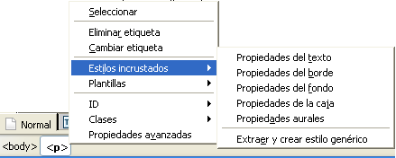

Estilos>>Aplicar estilos

Ya conocemos la sintaxis básica para construir reglas de estilo. Ahora vamos a ver las tres formas en las que podemos situar estas reglas de estilo para que el navegador lea su contenido y utilice sus especificaciones para darle forma al documento.
Cuando un estilo es propio de un único documento podría utilizarse una hoja de estilos interna, mediante la creación de una sección <style> dentro de la cabecera del documento. Este es el método que se ha utilizado para mostrar los ejemplos particularizados que puedes consultar en las ventanas emergentes.
Ten en cuenta que con este tipo de inclusión perdemos de vista una de las finalidades prioritarias de las hojas de estilo, ya que se mezcla en el mismo documento html las especificaciones referidas al formato con las marcas que sirven para estructurar el contenido. Sin embargo puede ser un primer paso para que compruebes la potencia de las hojas de estilo.
Nota: Normalmente los
navegadores ignoran las etiquetas que desconocen, por lo que un
navegador antiguo que no soporte estilos ignorará el
contenido de <style>, pero
mostrará es
probable que muestre en pantalla el
contenido de la sección. Para evitarlo podemos utilzar las
etiquetas de comentario de HTML tal como se muestra en el siguiente
fragmento de código.
<head>
<style type="text/css">
<!--
hr {color: sienna}
p {margin-left: 20px}
body {background-image: url("images/back40.gif")}
-->
</style>
</head>
A continuación tienes un ejemplo de código para la inclusión de un estilo global en una página. Puedes ver el resultado en una ventana independiente. (Ten en cuenta que se podían haber utilizado otras etiquetas y otras propiedades de las mismas)
<html>
<head>
<title> Título de la página
</title>
<style
type="text/css">
<!--
body {background: black; font-size: 12px; font-family:
Arial,Helvetica,sans-serif; color: yellow; text-align:justify;
margin-left: 0.5in; margin-right: 0.5in}
H1 {background: aqua; font-size: 16px; font-weight: bold; color:
orange}
H2 {font-size: 14px; font-weight: bold; color: white}
-->
</style>
</head>
<body>
Contenido y etiquetas del cuerpo de la página
</body>
</html> Como has visto en el ejemplo, la sintaxis se ha modificado al incluir el estilo en la cabecera:
<style type="text/css">
y </style><!--
y,
antes de cerrar el estilo, poner la de cierre de comentario -->
para evitar que los navegadores antiguos puedan presentar la
definición del estilo como si fuera un texto normal.{ } y se escriben según el
esquema propiedad, dos
puntos, valor y punto y coma para separar de la siguiente propiedad. La
inclusión del estilo se hará después
de la etiqueta de cierre del título
La
inclusión del estilo se hará después
de la etiqueta de cierre del título </title>
Crea una página con varios párrafos de texto. Puedes utilizar el mismo texto que usamos en la actividad 48
h2)h2.
Tienes disponible un
vídeo explicativo del
proceso.divdiv que
has creado<body>
para que todo el texto de
la página se presente de color verde (green). El
editor de CSS de N|VU puede tener en ocasiones algún
comportamiento imprevisible y no guardar las reglas que
hayamos
ido creando. Se recomienda como método de trabajo que, antes
de
empezar a crear estilos, guardemos el documento html. Además
es preferible que, si hemos hecho alguna
modificación en el
documento, lo guardemos antes de empezar a trabajar con el editor CSS y
que volvamos a guardarlo tras cerrarlo.
El
editor de CSS de N|VU puede tener en ocasiones algún
comportamiento imprevisible y no guardar las reglas que
hayamos
ido creando. Se recomienda como método de trabajo que, antes
de
empezar a crear estilos, guardemos el documento html. Además
es preferible que, si hemos hecho alguna
modificación en el
documento, lo guardemos antes de empezar a trabajar con el editor CSS y
que volvamos a guardarlo tras cerrarlo. Aunque iniciamos la exposición de posibilidades con las hojas de estilo internas realmente lo correcto habría sido iniciarla con las hojas de estilo externas, ya que ésta es la forma ideal de aplicar un estilo a varias páginas de forma simultánea. De hecho debería ser la forma prioritaria puesto que permite separar claramente el contenido y la estructura, que van el el cuerpo del documento html, del formato que se aplicará desde un archivo externo de hoja de estilos.
Para hacerlo habrá que utilizar en cada documento
la etiqueta <link> situada en
la cabecera del documento,
después de la etiqueta <title>
<head>
<title>página para
mostrar la situación de los estilos<title>
<link rel="stylesheet" type="text/css"
href="miestilo.css">
</head>
Gracias a este enlace el navegador leerá las especificaciones de la hoja de estilos y dará formato al contenido de acuerdo a ellas.
Así pues hay que seguir dos pasos:
Para realizar esta tarea podemos aprovechar una función que nos brinda el editor de CSS integrado en N|VU o bien construir directamente el archivo con un editor de texto plano.
Seguramente te habrás asustado un poco pensando en tener que escribir las reglas a mano, ya que supone aprender los diferentes tipos de selectores y sus valores y un aumento en las probabilidades de equivocarte. Tienes una parte de razón pero, en cuanto tengas una cierta práctica verás como usar un editor externo te resulta muy útil: aunque inicies la creación con el asistente gráfico y sea éste el que se encargue del trabajo más duro el repaso con el editor externo te resultará muy cómodo.
Para crear un archivo de definiciones que recogiera las características del ejemplo anterior escribiríamos:
body {background: black; font-size: 12px;
font-family:
Arial,Helvetica,sans-serif; color: yellow; text-align:justify;
margin-left: 0.5in; margin-right: 0.5in}
h1 {background: aqua; font-size: 16px;
font-weight: bold; color: orange}
h2 {font-size: 14px; font-weight: bold; color:
white}
 Observa
que el archivo no incluye ninguna etiqueta en el formato habitual. Se
trata simplemente de un archivo de texto con las propiedades
atribuidas a cada elemento.
Observa
que el archivo no incluye ninguna etiqueta en el formato habitual. Se
trata simplemente de un archivo de texto con las propiedades
atribuidas a cada elemento.
Una vez definidas las propiedades guardaremos el archivo en formato
texto con el nombre que queramos y la extensión
css. Por
ejemplo, estilodeprueba.css
El paso 2 es incluir en la cabecera de la página,
detrás de la etiqueta </title>
la etiqueta
<link
rel="stylesheet" href="estilodeprueba.css" type="text/css">
El siguiente ejemplo presenta la misma
apariencia que vimos al aplicar el estilo en la página, pero
está creado utilizando este método.
file:///  eliminando las referencias absolutas y convirtiéndola en una
ruta relativa al documento actual.
eliminando las referencias absolutas y convirtiéndola en una
ruta relativa al documento actual.
font-weight: bold dentro
del selector body, sin olvidar finalizarla con punto y coma) Si ya tenemos definida una hoja de estilos y deseamos reutilizarla añadiendo algunas modificaciones podemos crear una nueva hoja de estilos en la que importemos el contenido de la que ya teníamos y añadamos las nuevas reglas. Puede ser por ejemplo, el caso de un centro en el que se utilizara una hoja de estilos genérica y cada nivel o departamento aprovechara esas especificaciones y añadiera las suyas propias para personalizar una zona de la web.
Para importar una hoja de estilos ya creada lo debemos indicar en la primera línea de la nueva hoja (o en la primera y sucesivas si estamos importando varias hojas) utilizando la sintaxis:
@import url(colegio.css);
/* A continuación añadimos
los selectores, clases
y pseudoclases que modificamos con sus propiedades correspondientes */
h1 { font-style : italic }
...
h2 {background: aqua; font-size: 16px;
font-weight: bold; color: orange}@import como primer elemento. Cierra el
editor y guarda el archivo.@import cuando
se
cierra el archivo y se vuelve a abrir se comprueba que N|VU no ha sido
capaz de escribir en el archivo externo y hay que repetir la
acción. Así pues, la recomendación es
que cierres
y vuelvas a abrir el archivo html, o bien que abras en el editor
externo el archivo css para comprobar que efectivamente se ha
añadido como primera regla la importación de otra
hoja de
estilo.Aunque cuando consultes documentación encontrarás la denominación estilo en línea para el que se aplica directamente sobre un elemento al crear el código HTML hemos incluido también la denominación estilos incrustados que les aplica N|VU. Evidentemente es el procedimiento menos recomendable, ya que perdemos practicamente todas las ventajas ofrecidas por las hojas de estilo al mezclar el contenido y la presentación. La única ventaja que puede presentar respecto al código HTML es que permite la especificación de un abanico mucho mayor de propiedades.
La forma de insertar un estilo incrustado es seleccionar la etiqueta a la que queremos afectar en la barra de estado y pulsar el botón derecho para elegir . Esta opción desplegará un submenú que corresponde a cada una de las cinco pestañas del editor de CSS que ya conocemos.
La sintaxis que se utiliza para los estilos incrustados es
ligeramente diferente de la que hemos utilizado hasta ahora para las
hojas de estilo externas e internas. Añadimos style
como atributo de la etiqueta que deseamos
modificar y las propiedades y valores se encierran entre comillas en
lugar de entre llaves. Así pues, si tuviéramos
que crear un estilo incrustado manualmente lo haríamos de la
siguiente forma:
style y el signo igual. Como
era de esperar, la aplicación de las reglas de cascada ha hecho
que prevaleciera el estilo más particular, de forma que el
párrafo con el estilo incrustado ha tomado las
características que se empleaban en el mismo en caso de que
entraran en contradicción con las del estilo interno o la hoja
externa si la hubiera.
Como
era de esperar, la aplicación de las reglas de cascada ha hecho
que prevaleciera el estilo más particular, de forma que el
párrafo con el estilo incrustado ha tomado las
características que se empleaban en el mismo en caso de que
entraran en contradicción con las del estilo interno o la hoja
externa si la hubiera.
Ya hemos indicado que el estilo incrustado es poco recomendable porque vuelve a juntar el contenido con la presentación, pero siempre podemos recurrir a la última opción del menú:. Con ello obtendríamos una hoja de estilo interna que, a su vez, podríamos exportar desde el editor de CSS para convertir en externa, de forma que volveríamos a tener completamente separados el contenido y el formato de presentación.
La primera vez que utilices este panel aparecerá marcada por defecto la opción de que el estilo se le aplique . El efecto que conseguims es que el programa incluirá un identificador ID en el elemento y creará una regla aplicable sólo a ese elemento concreto. Podremos crear nosotros el nombre del identificador o dejar que el programa lo genere automáticamente, aunque será preferible hacerlo nosotros para facilitar las revisiones posteriores poniendo un nombre que tenga cierto sentido.
Lo habitual, sin embargo, será crear una regla que se aplique
a varios elementos simultáneamente, bien sea creando una clase a
la que tendremos que nombrar, bien haciendo que se aplique a todos los
elementos del mismo tipo que aquel del que estamos extrayendo la regla,
o bien aplicando la pseudoclase :hover para que el estilo se aplique a los elementos o clases cuando el ratón pase sobre ellos
Vamos a utilizar el mismo texto que creamos en la actividad 82 aprovechando el trabajo de marcado que allí habíamos hecho.
y comprueba la sintaxis que se ha aplicado para incrustar el estilo.
La respuesta es, sencillamente, sí. Basta con repetir la etiqueta link tal como se ha visto poniendo en cada caso el nombre de la hoja con la que se quiere enlazar. Ahora bien, habrá que tener en cuenta que si hay contradicción entre las definiciones de algún elemento, prevalecerá la hoja a la que se haya nombrado en último lugar al crear los enlaces. Además, sobre las hojas enlazadas tendrán prioridad las hojas de estilo internas y, sobre ellas, los estilo en línea aplicados a algún elemento particular.
Por ejemplo, si tenemos nuestra página enlazada con la hoja de estilos genérica de la web del centro, a continuación la hemos enlazado con una hoja de estilos que se está usando para el departamento, tenemos una hoja de estilos interna definida sobre la página y hay algún elemento al que le hemos aplicado un estilo en línea pasaría algo similar a lo siguiente:
La hoja de estilos del centro tiene definidas las propiedades siguientes para el selector h3:
h3 { color: red;
text-align:
left; font-size: 10pt }
La hoja del departamento tiene sin embargo definido el selector h3 de la siguiente forma:
h3 { text-align: right}
La hoja de estilos interna especifica:
h3 {color: green;
font-size:
20pt}
Y hemos especificado en línea sobre una etiqueta h3
<h3
style="font-size:
10pt}
El resultado final será:
Si en vez de a un elemento quiero aplicarle un estilo a un
grupo de elementos puedo englobar dichos elementos entre las etiquetas
<div> y </div>
y aplicar allí el
estilo que teníamos definido como clase, tal como se ve en
el siguiente ejemplo. (o bien mediante un estilo en línea)
| Este código... | ...se ve así |
|---|---|
|
|
Primer párrafo
|
Puedo intercalar, en una zona delimitada por la
etiqueta <div>
algún estilo específico
aplicado a un elemento en concreto, como se muestra a
continuación. En este caso se ha utilizado un estilo en
línea para modificar el selector <p>
| Este código... | ...se ve así |
|---|---|
|
|
Primer párrafo de la
zona azul
Este párrafo va en rojo en medio de una zona azul Otro párrafo de la zona azul |
Si lo que pretendo es aplicar el estilo a una zona menor que
la correspondiente a un elemento en bloque, por ejemplo, una palabra
dentro de un párrafo utilizaré la etiqueta
<span> y su cierre </span>
| Este código... | ...se ve así |
|---|---|
|
|
En este párrafo señalo esta palabra en tamaño de 16 píxeles, en negrita y de color naranja |
 Recuerda
que las hojas enlazadas figuran en el último lugar de
prioridad y que, sobre ellas se superpondrán la
definición de estilo que hagamos sobre la propia
página y, en el primer lugar de prioridad, las
modificaciones que realicemos para una etiqueta en particular.
Recuerda
que las hojas enlazadas figuran en el último lugar de
prioridad y que, sobre ellas se superpondrán la
definición de estilo que hagamos sobre la propia
página y, en el primer lugar de prioridad, las
modificaciones que realicemos para una etiqueta en particular.
Además, a este orden de preferencia hay que añadirle que, si el usuario tiene especificado un estilo en su navegador este tendrá preferencia sobre los estilos creados por el autor cuando haya contradicción. Por otra parte, el programa navegador (al que se denomina también Agente de usuario) puede imponer su estilo si así lo tiene definido en las configuraciones.
Probablemente recuerdes que, cuando se habló de los colores del texto se recomendaba tener en cuenta el destino final que pretendíamos adjudicarle a una página web. Escribir en blanco sobre fondo azul marino es una combinación elegante y muy relajada para la vista cuando visualizamos la página en pantalla, pero si queremos que el contenido se imprima... el color blanco del texto va a dejar poca huella sobre el folio en blanco.
Las hojas de estilo vienen en nuestra ayuda para casos
similares a éste, permitiéndonos especificar que
un estilo tenga una apariencia cuando el documento se muestre en una
pantalla y otra diferente cuando se imprima. Para hacerlo tendremos que
recurrir a la directiva @media. Tanto si
se trata de una hoja de estilos externa, como interna o con estilos en
línea, cuando incluimos una regla @media las propiedades que
se definan a continuación se aplicarán cuando el
documento se muestre en el tipo de medio especificado. La
aplicación más directa la encontraremos al
definir estilos para impresión
(@media print) y para pantalla
(@media screen)
<style type="text/css">
<!--
/* Definimos las reglas de estilo de la forma habitual.*/
body {
background-color: #000099; }
p { font-family: Arial, Helvetica, sans-serif; font-size: 14pt; color:
#FFFFFF;}
/*Y ahora indicamos las
características
para
imprimir*/
@media
print {
body {
background-color: #FFFFFF; }
p { font-family: "Times
New Roman", Times,
serif; font-size: 10pt;
color: #000000; }
}
/*Podríamos seguir especificando otros
selectores o
clases de aplicación general*/
-->
</style>
 Cuando
creamos estilos para un tipo de medio la sintaxis se modifica como si
creáramos una especie de "superselector": todos los
selectores aplicables a ese medio se encierran entre dos llaves
precedidas por la regla
Cuando
creamos estilos para un tipo de medio la sintaxis se modifica como si
creáramos una especie de "superselector": todos los
selectores aplicables a ese medio se encierran entre dos llaves
precedidas por la regla @media y el tipo de
medio, tal como se ha
marcado en la anterior muestra de código.
No hemos especificado @media screen
porque estamos trabajando
normalmente para pantalla y al no haber especificado nada los estilos
se aplicarán en el dispositivo que muestre la
página. (realmente lo único que
necesitábamos era diferenciar la presentación del
color de fondo y el tipo de letra cuando se imprimiera)
Importante: Aunque el editor CSS de N|VU dispone de un botón @media no funciona, por lo que si necesitamos crear un conjunto de reglas bajo este superselector tendremos que hacerlo editando manualmente el archivo CSS o el estilo en línea.
Pero no solo podemos especificar la pantalla y la impresión como medios para los que especificar estilos. El listado completo de medios actualmente establecidos por el W3C es el siguiente:
Cada uno de estos medios puede disponer de algunas propiedades especificas, que se pueden consultar en la documentación del W3C. Se puede consultar, por ejemplo, la traducción de las especificaciones del W3C para hojas de estilo auditivas que es una de las mas desarrolladas.